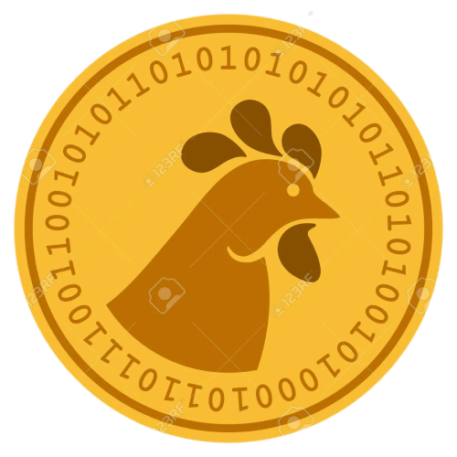

¿QUÉ SON LAS CRIPTOMONEDAS?
Las criptomonedas se pueden describir simplemente como una moneda virtual que no tiene forma física.
Es decir, las criptomonedas son monedas digitales que no tienen una base de metal, y su valor está
determinado principalmente por mecanismos de libre mercado: los principios de oferta y demanda. Si
posees criptomonedas las almacenas en tu ordenador o en la aplicación de tu smartphone, en una
“billetera”, a la que solo tú tienes acceso.
Si deseas realizar una transacción, solo vas a poder hacerla por vía electrónica.
Bitcoin lo empezó todo. Lleva el peso de ser la red más atacada y la más descentralizada. Es, sin ninguna
duda, la mayor y más potente red encriptada de la historia.
¿Que es PoioCoin?
PoioCoín es un software open source que además contiene una red diseñada para dar un lugar de creación y gestión de los contratos inteligentes, su lanzamiento fue en el 2018.
Siendo una moneda digital descentralizada, es decir, no controlada por entidades financieras, gobiernos, ni cualquier otra institución, pero que a través de la red que gestionara y guardara cada uno de sus movimientos la PoioCoín le permitirá tener un poco más de seguridad ya que solo sera ejecutada por todos los ordenadores que estén conectados a esa red. En el caso de que alguien intentase realizar una acción fraudulenta en la red, esta evitaría que esta se propagase por ella.
¿POR QUE ESCOGER LA POIOCOIN?